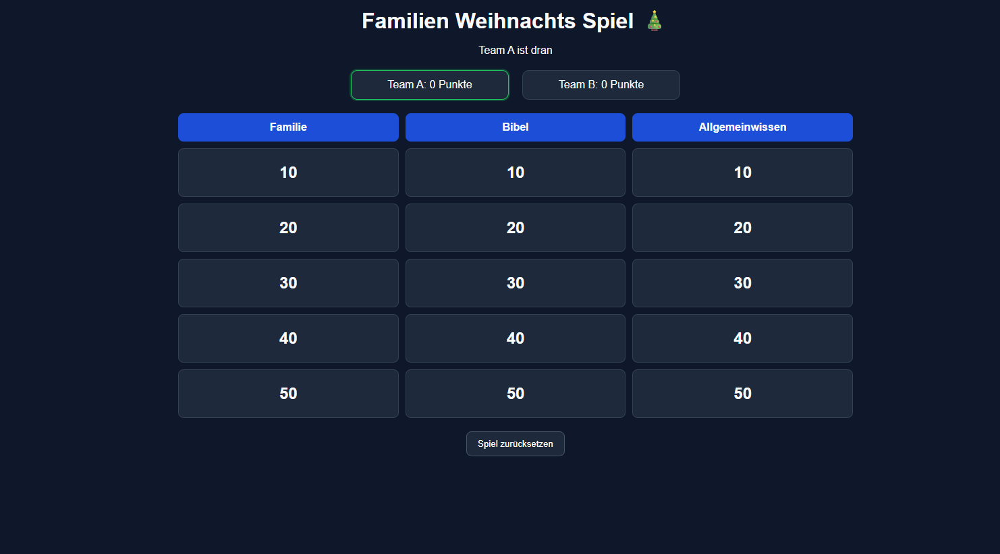
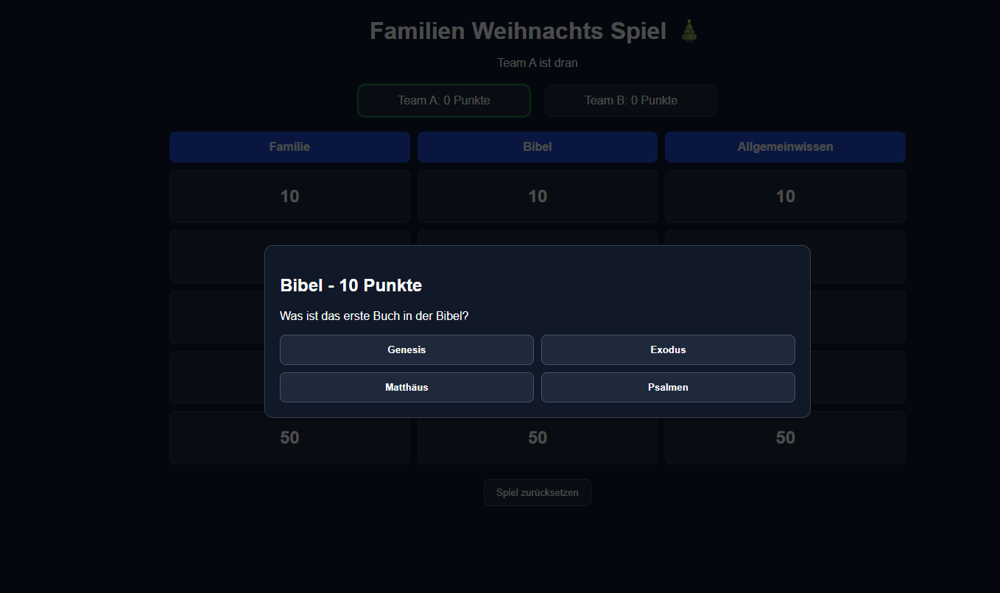

Noam Heimbichner
Angehender Fachinformatiker für Anwendungsentwicklung
Über mich
Mein Interesse für Programmierung begann bereits mit etwa 11 Jahren. Ich habe angefangen, mich mit Roblox Studio zu beschäftigen und erste Erfahrungen mit der Programmiersprache Lua zu sammeln. Dabei habe ich gelernt, einfache Spielmechaniken und Abläufe zu programmieren.
Später begann ich, mich mit Webentwicklung zu beschäftigen und lernte die Grundlagen von HTML und CSS. Besonders fasziniert mich, dass man durch Programmierung eigene Ideen umsetzen und funktionierende Anwendungen entwickeln kann. Deshalb arbeite ich in meiner Freizeit gerne an kleinen eigenen Projekten.
Neben meinem Interesse an Informatik engagiere ich mich ehrenamtlich im technischen Bereich in meiner Gemeinde sowie bei der Bibel- und Missionsschule Ostfriesland. Dort unterstütze ich bei technischen Aufgaben und sammle praktische Erfahrungen im Umgang mit Technik und Verantwortung.
Mein Ziel ist es, eine Ausbildung zum Fachinformatiker für Anwendungsentwicklung zu beginnen, um meine Kenntnisse weiter auszubauen und professionelle Softwarelösungen entwickeln zu lernen.
Skills
- Anfänger: HTML
- Anfänger: CSS
- Lua (Roblox Studio)
Aktuell lerne ich
- JavaScript Grundlagen
Meine Interessen
- Programmieren
- Technik
- Fitness
- Volleyball
- Mein christlicher Glaube
Projekte
Family Game – mein aktuelles Projekt als kleines Quiz-Spiel.

